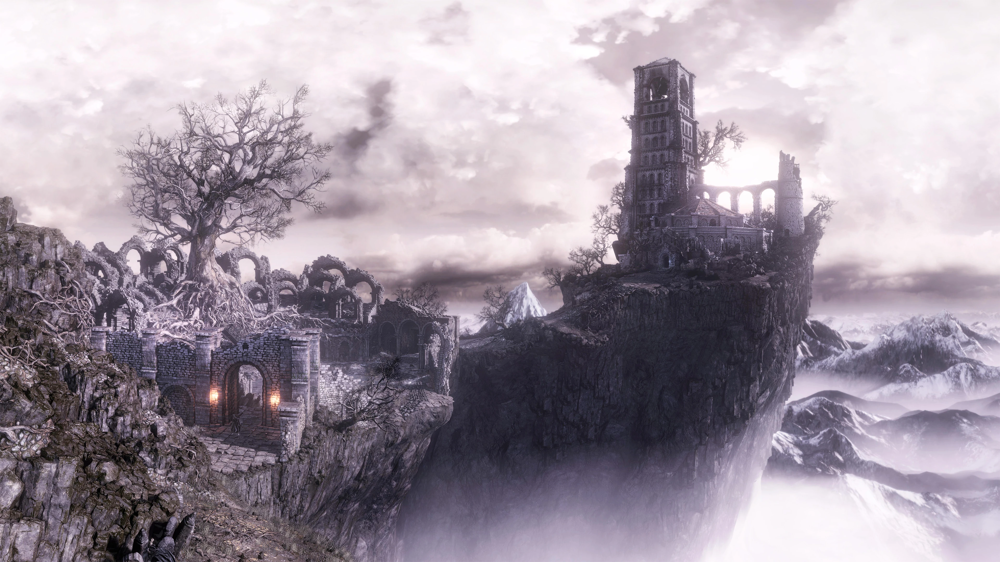

Zona

Jefe
Cementerio de Ceniza
Zona de inicio cubierta de cenizas y cadáveres en reposo eterno. El "Ashen one" despierta aquí sin recuerdos, enfrentando su primer reto en un páramo desolado y silencioso que marca el tono de toda la aventura. Sus caminos serpenteantes y su cielo encapotado transmiten desde el primer momento la sensación de un mundo que agoniza.
Jefe Principal
Iudex Gundyr
Colosal caballero corrompido que actúa como guardián y primera prueba del elegido. En su segunda fase, el parásito que lo consume emerge como una masa oscura devastadora, exigiendo reflejos y adaptación rápida al jugador.